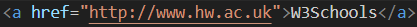
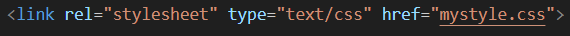
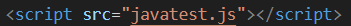

Pears are fruits produced and consumed around the world, growing on a tree and harvested in late summer into mid-autumn. The pear tree and shrub are a species of genus Pyrus, in the family Rosaceae, bearing the pomaceous fruit of the same name. Several species of pears are valued for their edible fruit and juices, while others are cultivated as trees.
Did you know?
There are more than 3,000 types of pears throughout the world. They can range from Anjou to Williams, each varying by size, shape, sweetness, and crispness.
In China, pears are a symbol of immortality. Interestingly, it's believed that sharing pears may disturb the relationship between friends or lovers.
Pears are rich in dietary fibers, vitamin C, and vitamin K. They're also sources of minerals such as copper and potassium. A medium pear has about 100 calories.
Web Code notes
The internet is:
A global scale internetwork of wide area computer networks using TCP/IP protocols
W3C
Stands for World-Wide Web Consortium
W3C is the ones making the Web standards
The internet does NOT have a central operations manager is regulated by organisations
The 4 layer network structure is:
lan
ip
tcp
http
TCP
Transmission Control Protocol
TCP carries reliable services - email (SMTP, IMAP), web (HTTP)
UDP
User Datagram Protocol
carries unreliable services
Colours
Valid colour codes will be formated like the following:- #000000; - it will have a # followed by 6 zero's
Links:
To open a new site from a link such as:

This makes a link for stylesheet:

**Note: also goes in the head of the site
for JS you need to put a different link.
this is:

You typically put this at the end of the 'body' section. Placing the 'script' tag just before the closing '/body' tag is a common practice for improving page load times. It allows the HTML content to load and render first, so users can see your page's content while scripts are loading and executing.
Inputs
'input type="checkbox' - makes a checkbox
'input type="text"'' - makes a text box
'textarea rows="10" cols="50" style="width: 500px; height: 550px;'' - this will make a text area with a width of 500px and height of 550px
CSS elements
font-weight:bold; - makes it bold
text-decoration:none; - no underline for text decoration
text-transform:capitalize - make each word in a text start with a capital letter
CSS rules and tings
you can not use negitive values with padding and that
id is "#"
class is "."
to group selectors you need to separate each selector with a comma
GIT tings
GIT is a distributed version control system
Files in the working directory that Git does not know about because the have not been staged or committed
Git is a free and open source software for distributed version control (tracking changes in any set of files).
JavaScript
JavaScriptJavaScript is heavily object-based
Objects are associative arrays, augmented with prototypes (see below). Object property names are associative array keys: obj.x = 10 and obj["x"] = 10 are equivalent, the dot notation being merely syntactic sugar. Properties and their values can be added, changed, or deleted at run-time. The properties of an object can also be enumerated via a for...in loop.
WHAT IS WEB STORAGE?
Web storage is a means by which web applications can store data locally within the user's browser
Before HTML5 and Web Storage application data had to be stored in cookies
Not just cookies
WHAT IS LOCAL STORAGE?
Local storage is a type of web storage that allows Javascript websites and apps to store and access data right in the browser with no expiration date
WEB STORAGE
JavaScript API
stores user data locally on host running browser put it in silos correlated with web server domain origins
Only web pages from domain D can access D's silo via web storage
localStorage stores data persistently for each web server
sessionStorage stores data sessionally per server per browser instance
WHY WEB STORAGE?
Web storage is more secure
Large amounts of data can be stored locally
Doesn't hinder website performance
Web storage avoids
size limits of cookies
security issues of cookie traffic with web server
WEB STORAGE FUNCTIONS
Support the following functions
setItem(key, value) set key to value
getItem(key) get value of key
removeItem(key) delete key and its value
clear() remove all key/value pairs
key(i) get ith element of array of keys
WEB STORAGE
Web storage stores data sessionally or persistently
Session data stored in browser's volatile memory and is lost when browser closes
HOW DO WE KNOW IF WEB STORAGE IS SUPPORTED?
EXAMPLE OF WEB STORAGE (LOCAL STORAGE)
THE ABOVE EXAMPLES CODE:
EXAMPLE (SESSION STORAGE)
Sessional (See below for further examples)
Example defines 3 functions to use session storage
savewb() updates web storage with key/value
acesswb() display keys and values in web storage
clearwb() removes key/value pairs from web storage
EXAMPLE (SESSION STORAGE)
BROWSER COOKIES
Cookies are small packets of data stored in file space of web users
Cookies attributes:
name
value
domain
path
duration
Webservers ask web clients to store cookies
Cookie attributes are set by web server
COOKIES
Cookies
avoid HTTP's statelessness by storing data on client
are passed in Set-Cookie response and Cookie request headers
are stored in user's filespace or in browser's volatile memory
Cookies can be manipulated by
meta directive in HTML
JavaScript in web page
web server programs (e.g., CGI, servlets, JSP, Node.js)
COOKIE STANDARDS
There used to be 2 cookie standards - Netscape's and RFC 2965.
Combined reformed standard RFC 6265 now governing cookie form
AUTHENTICATION COOKIES
Authentication cookies are commonly used by web servers to authenticate that a user is logged in, and with which account they are logged in. Without the cookie, users would need to authenticate themselves by logging in on each page containing sensitive information that they wish to access. The security of an authentication cookie generally depends on the security of the issuing website and the user's web browser, and on whether the cookie data is encrypted. Security vulnerabilities may allow a cookie's data to be read by an attacker, used to gain access to user data, or used to gain access (with the user's credentials) to the website to which the cookie belongs.
TRACKING COOKIES
Tracking cookies, and especially third-party tracking cookies, are commonly used as ways to compile long-term records of individuals' browsing histories — a potential privacy concern that prompted European[3] and U.S. lawmakers to take action in 2011.[4][5] European law requires that all websites targeting European Union member states gain "informed consent" from users before storing non-essential cookies on their device.
ATTRIBUTES
Optional attributes, which may occur once in any order, are:
Domain domain of validity - defaults to server's hostname
Expires date time when cookie expires
HttpOnly cookie is only to be sent over HTTP
Max-age how many seconds from now onwards to keep cookie
Path defaults to path of document creating cookie
Secure cookie is only to be sent on secure channel (HTTPS)
Max-age higher priority than Expires if both are present
Security
SECURITY
CLIENT
Mostly arise from malicious data or code, malicious code refers to viruses, worms, Trojan horses
SERVER
Includes threats such as, unauthorised eavesdropping, Denial of Services (DoS), and modification of incoming data packets